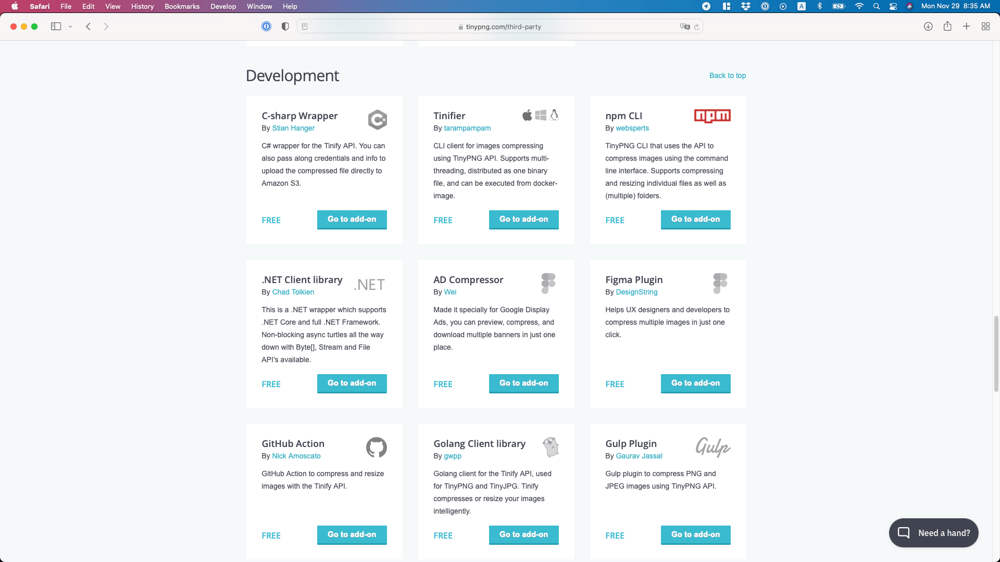
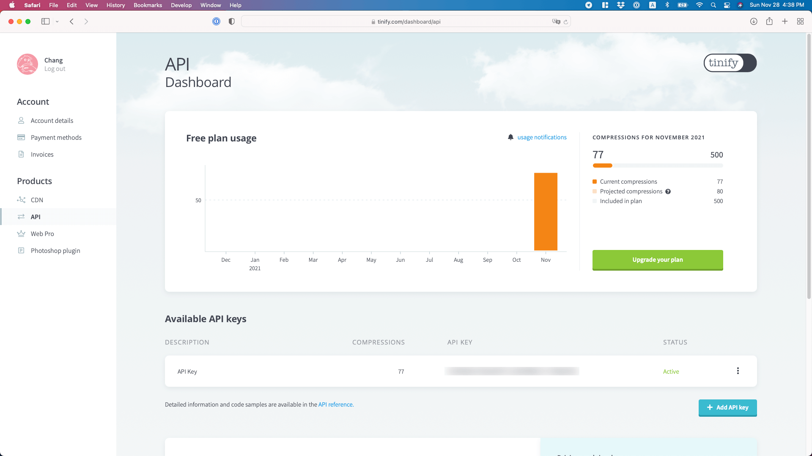
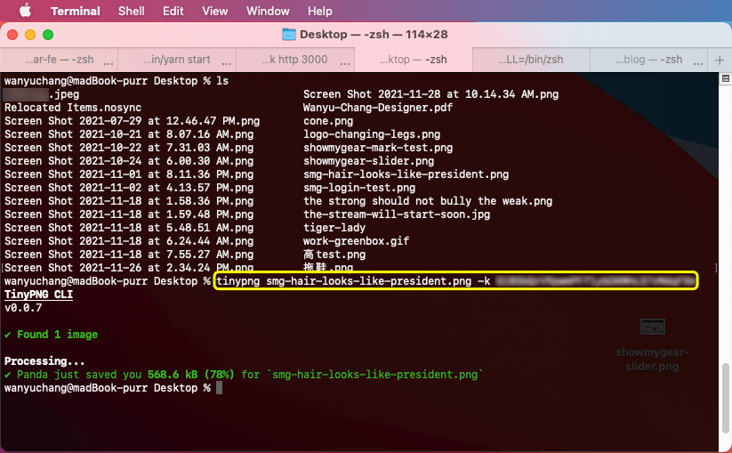
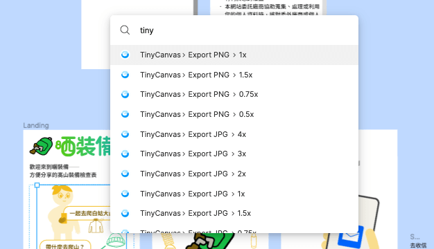

已知用火之壓縮圖檔的這部分
原本我都是很認命的在 tinypng 首頁上傳下載來壓縮圖檔，直到最近才發現原來流程這麼輕易就可以簡化！
某天我在畫曬裝備團隊裡的後端藝術家 —— Ruby 的髮型，畫一畫覺得好像另外一個人 … 自己覺得很趣味因此截圖紀念。
我慣用 macOS 內建的螢幕截圖功能，不知道以後會不會有優化檔案大小的功能，但現在似乎還是要自己處理，這張截圖大小高達 742 KB！
啊整天在那邊上傳下載上傳下載膩？
以前我的流程是前往 tinypng，上傳圖檔，再下載壓縮好的圖檔。
742 KB 壓縮後變成精實的 160 KB！
有時候同一張圖會重複好幾次，直到確定無法再壓縮。我覺得 tinypng 壓縮圖檔的品質非常好，但首頁上這個上傳下載的流程會消耗你珍貴的意志力。
直到最近我才注意到 tinypng 的 Third-party 中有推薦 TinyPng CLI 跟 Figma plugin！
用 TinyPng CLI 的好處是不需要開網站，在電腦上的終端機輸入指令來壓縮圖檔，而且還可以指定圖檔長寬，這在瀏覽器是無法做到的！
我沒在用 Windows 跟 Linux，以下是我在 macOS 設定的步驟：
1.申請 tinypng 帳號取得 API key，免費方案一個月可以壓縮 500 次。
2.為了使用 npm ，要先裝 Node.js，身為美工的我推薦直接下載 Node 安裝檔 來完成安裝，尤其如果你不知道這是什麼的話。我真的覺得 Node.js 使用體驗很差餒，英文不好加上電腦也不好，錯誤訊息常常讀不懂，以及個人曾經發生過亂用指令導致電腦差點變磚塊的創傷，我個人強烈譴責非圖形介面。
3.安裝 TinyPng CLI，我個人覺得他的說明已經滿清楚就不贅述。但萬一你迷失了請不用害羞，歡迎在 twitter 上 tag 我，或是 email: wwwanyuchang@gmail.com
用 TinyPng CLI 的指令來幫圖檔減肥就像這樣：
我整天不是在截圖就是在用 Figma
使用熱心網友投稿的 Figma plugin TinyCanvas，匯出圖檔時時也可以用 tinypng 的壓縮功能！在 Figma 按鍵盤快速鍵 Command + p 可以打字搜尋想用的功能，像這樣：
真的方便到哭出來！